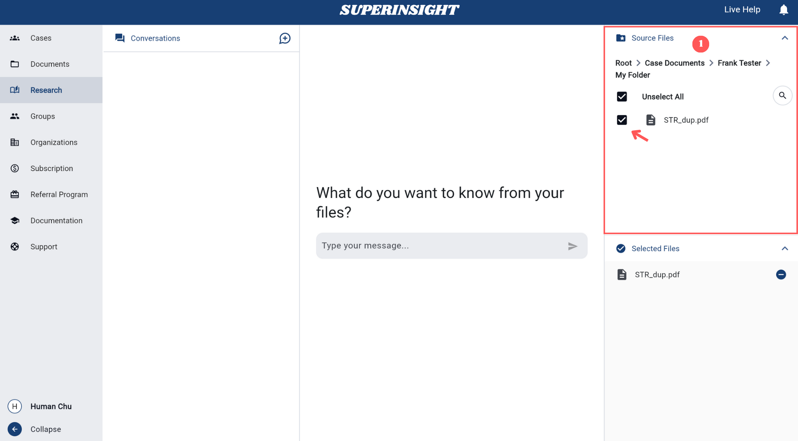
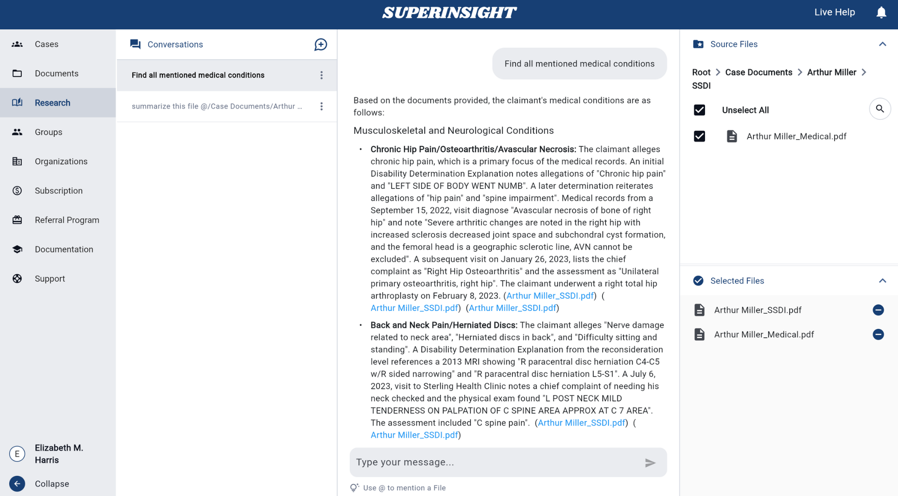

Manage Research
Overview
The Research feature is a powerful AI-powered tool that allows you to query your uploaded documents using natural language. This feature enables you to extract insights, find specific information, and get contextual answers from your document collection without manually searching through files.
You can ask questions such as:
- "Summarize this file"
- "What are the key points in this report?"
- "What happened on this date?"
- "Find all mentions of specific medical conditions"
- "Compare the findings between these documents"
The Research feature provides intelligent, context-aware responses based on the content of your selected documents.
How to Use
Quick Start Summary
To use the Research feature effectively, follow these key steps:
- Access Research: Navigate to the Research section from the left sidebar
- Select Files: Choose at least one document from the Source Files panel
- Ask Questions: Type your question and press Enter to submit
- Review Results: Read AI responses and click source links to view references
- Manage Conversations: Start new conversations or delete old ones as needed
Accessing Research
Navigate to the Research section from the left sidebar. The Research tab provides a dedicated workspace for document querying and analysis.
Selecting Source Files
Required Step
You must select at least one source file before you can start asking questions. The Research feature cannot function without document access.
Before you can start asking questions, you need to select one or more source files from your document collection. Without file selection, the message input field will remain disabled and you cannot proceed with your research queries:
Use the right-hand Source Files panel to select documents from either My Documents or Case Documents.

Click on files to select them. At least one file must be selected to enable the Research feature. You can select multiple files for comprehensive analysis across multiple documents.
Starting a Conversation
Ready to Research
Once you have selected at least one file, the message input field becomes active and you can begin asking questions:
Basic Steps:
- Type your question in the message input field
- Write naturally - ask as you would speak to a colleague
- Press Enter or click the send arrow (→) to submit
Advanced: Target Specific Files
- Type "@" to open file dropdown
- Select specific documents for focused analysis
- Example: "@document.pdf What medical conditions are mentioned?"
Question Types & Examples:
- General Analysis: "What are the key points in this report?"
- Summaries: "Summarize the main findings"
- File-Specific: "@filename.pdf What does this document say about...?"
- Comparisons: "Compare the recommendations between @file.name1 and @file.name2"

Getting Responses
The Research feature will analyze your selected documents and provide contextual answers. Please note that processing may take up to one minute as the AI thoroughly analyzes your documents to provide accurate and comprehensive responses:
The system processes your question and returns relevant information from your documents.

Responses include references to specific parts of your documents for verification. When you click on a source link in the AI response, the referenced document opens in a panel on the right side, showing the exact page and location where the information was found. This allows you to verify the AI's answers against the original source material.

Conversations Panel
The Conversations panel on the left side of the Research interface provides comprehensive conversation management with three main capabilities:
Conversation Management
- Click the New Conversation button to clear previous context
- Select new source files from the Source Files panel
- Begin asking questions about your newly selected documents
Remove unwanted conversations from your history to keep your workspace organized.
How to Delete:
- Locate Conversation: Find the conversation in the Conversations panel
- Open Menu: Click the three dots (⋮) next to the conversation
- Select Delete: Choose Delete from the dropdown menu
- Confirm: Click Yes in the confirmation dialog

Permanent Action
Deleted conversations cannot be recovered.
View Conversation History
All previous questions and answers are automatically saved and displayed in the Conversations panel. Each conversation is tied to the specific documents you selected when asking the question.

Key Features:
- Access Previous Conversations: Click on any conversation to view its complete question and answer history
- Document Tracking: Each conversation displays which specific documents were analyzed
- Continue Discussions: Resume existing conversations by adding follow-up questions
- Smart Context: The system remembers previous exchanges within the same conversation
Best Practices
Effective Questioning
- Be Specific: Ask targeted questions for more precise answers
- Use Natural Language: Write questions as you would ask a colleague
- Reference Context: Mention specific dates, names, or events when relevant
- Follow Up: Use previous answers to ask more detailed follow-up questions
File Selection
- Relevant Documents: Select only the documents relevant to your research question
- Multiple Sources: Include multiple files for comprehensive analysis
- Case Context: Use case-specific documents for case-related research
- Personal Files: Include personal documents for broader context when needed
The Research feature transforms your document collection into an intelligent knowledge base, enabling you to quickly find information, extract insights, and make informed decisions based on your uploaded content.